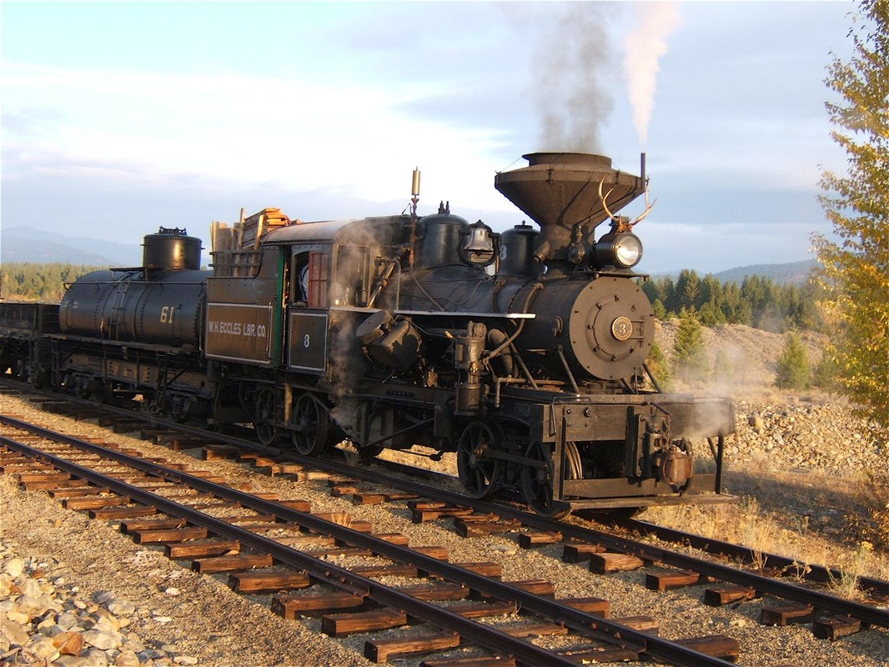

Last updated: 24 June, 2015
| Builder: | Heisler |
| Build #: | 1306 |
| Date: | 1915 |
| Engine #: | 3 |
| Railroad: | WH Eccles Lumber |
| Website: | www.sumptervalleyrailroad.com |
| Email: | info@sumptervalleyrailroad.org |
| Location 1: | Sumpter Valley Railroad, McEwen Depot 12259 Huckleberry Loop, Baker City, OR 97814 |
| GPS: | 44.702248, -118.119285 Parking. |
| Location 2: | Sumpter Valley Railroad, Sumpter Station 211 Austin St. Sumpter, Oregon 97877 |
| GPS: | 44.744365, -118.204340Probable parking. |
| Phone: | 541-894-2268 |
| Status: | Operational |
| Notes: | Only surviving wood burning Heisler in the USA. |
| Class: | |
| Gauge: | 36" |
| F.M.Whyte: | Heisler2Tr |
| Drivers: | |
| Gear Ratio: | |
| Tractive Effort: | |
| Weight: | 40 ton |
| Weight on Drivers: | |
| Length: | |
| Boiler: | |
| Cylinders: | |
| Top Speed: | |
| Horsepower: | |
| Fuel: | |
| Fuel Type: | |
| Water: | |
| Steam psi: |